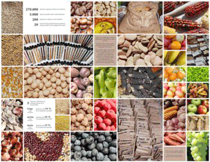

Los alimentos y la Crisis
LAS SOLUCIONES VENDRÁN DEL CAMPO
PRECIOS DE LOS ALIMENTOS
Y LAS CRISIS DE NUESTROS DÍAS
Mary Ellen Fieweger

“La bebida apaga la sed, la comida satisface el hambre;
pero el oro no apaga jamás la avaricia”.
Plutarco
Grecia, 50-120
“La Madre Tierra puede satisfacer bien a todas las criaturas que habitan sobre ella, pero nunca puede satisfacer la codicia ni de una sola persona”.
Mahatma Gandhi
India, 1869-1948
“El verdadero desarrollo debe estar en armonía
con las necesidades de las personas y los ritmos del mundo natural.
Los seres humanos son parte del universo, no sus patrones”.
Sulak Sivaraksa
Tailandia, 1933
Los alimentos están más caros que nunca. Y los precios seguirán subiendo, según los expertos en el tema, hasta duplicarse o más durante los próximos 20 años. Ésta es la conclusión de la Organización de las Naciones Unidas para la Agricultura y la Alimentación (FAO, siglas en inglés).
Para enfrentar la crisis, los gobiernos sudamericanos celebraron una cumbre en Chile a inicios de junio “para coordinar políticas ante el alza récord del precio de los alimentos que mantiene en 53 millones el número de personas con hambre en la región”, según una nota de El Comercio de Quito.
Monsanto o Ecología
¿A qué se debe la crisis? Existen dos puntos de vista al respecto. Por un lado, está el que se podría denominar la “Explicación Monsanto”, por la transnacional fabricante de semillas e insumos agrícolas más grande del mundo. Este enfoque considera la subida de los precios como un problema técnico cuya solución tiene que ser técnica también. O, mejor dicho, tecnológica, esto es, lo que hace falta es una nueva Revolución Verde, aprovechando los avances en el campo de la biotecnología. La solución vendrá de un número limitado de paquetes de semillas resistentes a diferentes condiciones adversas que se sembrarán en todas partes y que producirán cantidades ilimitadas de cultivos básicos. La cosecha de estos nuevos productos llenará los estómagos de todo el mundo y, de paso, los bolsillos de las personas que inviertan en el nuevo milagro.
El otro punto de vista podríamos llamar la “Explicación Ecológica”, en el sentido original y más amplio de la palabra. El vocablo ‘ecología’ viene del griego oikos, o casa, y logos, que significa conocimiento. Como sugieren las raíces de su nombre, la ciencia de la ecología es el estudio de los seres vivos como parte de su ambiente.
Esto implica que lo que se tiene que estudiar para conocer a un ser no es exclusiva ni principalmente cada elemento de dicho ser. Todo lo contrario, lo que tenemos que estudiar son las relaciones entre cada ser y todos los seres en su alrededor. Pero no sólo eso. Hay que estudiar también las relaciones que todos estos seres vivos, en su conjunto, tienen con los elementos inorgánicos a su alrededor, como el aire, por ejemplo, y el agua.
Implícito en la Explicación Ecológica son dos conceptos que no caben dentro de la
Explicación Monsanto: diversidad y límites.
Un poco de historia
La Revolución Verde inició en el valle Yaqui de México con la siembra de una variedad mejorada de trigo. El padre de las nuevas semillas fue Norman E. Borlaug, joven agrónomo estadounidense auspiciado por la Fundación Rockefeller en los años 1940. Luego, el doctor Borlaug llevó su paquete tecnológico a la India y Pakistán, países que se encontraban en ese entonces al filo de una hambruna masiva.
Con las nuevas semillas, los campesinos multiplicaron el rendimiento de sus cosechas por seis. En 1970, el doctor Borlaug recibió el Premio Nobel de la Paz por haber “suministrado pan a un mundo con hambre”. Pero al aceptar el reconocimiento en la ciudad noruega de Oslo, el científico advirtió que “estamos en la marea alta en este momento, pero la marea baja podría estar cerca…”
La llegada de la marea baja pronosticada demoró unas décadas. Mientras una tercera parte de la población en vías de desarrollo sufría desnutrición hace 40 años, al terminar la Revolución Verde a mediados de la década de los 1990, ese porcentaje había bajado a menos del 20. Por primera vez en la historia moderna, el número de personas con hambre estaba por debajo de 800 millones de personas.
Sin embargo, al iniciar el nuevo siglo, el clima impredecible comenzó a afectar las cosechas. Una ola de calor en Europa redujo la cosecha de 2003 en hasta el 30 por ciento mientras una sequía en Australia hizo igual con la producción de trigo y arroz. Por 2007 y 2008, estaban en un punto peligroso los granos almacenados y los precios duplicaron y, en algunos casos, hasta triplicaron. Hubo motines por la falta de alimentos en más de 30 países.
Debido al alza en los precios de comestibles, la FAO calcula que el año pasado había 925 millones de personas hambrientas en el mundo, mientras el Banco Mundial pone el número en unos 940 millones.
Los optimistas afirman que este problema está por solucionarse, que hoy nos encontramos frente a “una tercera revolución verde”, la primera siendo el inicio de la Transición Agrícola hace unos 10 mil años. En aquella entonces, nuestros antepasados descubrieron cómo domesticar plantas y adoptaron un estilo de vida sedentaria.
La nueva revolución será liderada por Monstanto, DuPont, Novartis y otras empresas que incluso podría incluir la Pronaca del Ecuador, convertida en una transnacional (ver recuadro, página…..). Lo que propone la vanguardia de la tercera revolución verde es lo que prometía la de la segunda: “Terminar con el hambre del mundo, logrando cosechas abundantes e independientes del clima o del suelo en el que se cultivase”.
La diferencia entre la nueva revolución prometida y la anterior es que ésta se basó en la siembra de variedades de alto rendimiento mientras la que está por iniciar se basará en la manipulación genética de cultivos como el maíz y la soya. Los especialistas en la genética han logrado descifrar, casi en su totalidad, los 50.000 genes que componen el genoma de dichos cultivos que representan el 40 por ciento de la dieta humana y la cuarta parte de las calorías que ingieren los más pobres. Al hacerlas más resistentes a la sequía que está provocando el cambio climático, se espera superar las hambrunas por venir. Esto, por lo menos, es el anhelo de Monsanto, empresa que tuvo ventas de casi 12 mil millones de dólares en 2009. Mientras tanto, la transnacional aporta ayuda a campesinos de los países más pobres. Su propósito: contribuir a la disminución del hambre en el mundo, que la empresa considera un “buen objetivo global” a corto plazo, y, sobre todo, que los agricultores se conviertan en clientes: “Esperamos que estos proyectos (de ayuda) los saquen de la pobreza y que un día el mercado funcione y ellos puedan convertirse en nuestros clientes”, declaró a la agencia noticiosa Reuters un directivo de Monsanto en 2009.
De Alimentos y otras crisis
 El problema, según los críticos de la revolución verde promovida por empresas como Monsanto, es que sería repetir un error colosal, puesto que la Revolución Verde anterior tiene una buena parte de la culpa por las hambrunas que amenazan hoy en día.
El problema, según los críticos de la revolución verde promovida por empresas como Monsanto, es que sería repetir un error colosal, puesto que la Revolución Verde anterior tiene una buena parte de la culpa por las hambrunas que amenazan hoy en día.
De hecho, dicen las personas que abogan por un nuevo camino, las denominadas “revoluciones verdes” son parte de un modelo cuya premisa básica es el crecimiento ilimitado y la eliminación de la diversidad. Es el modelo que nos ha traído las siguientes consecuencias en el transcurso de los últimos 50 años, según el teólogo brasileño Leonardo Boff:
- La destrucción de más o menos la mitad de los bosques del planeta.
- La liberación de inmensas cantidades de dióxido de carbono y otros gases de efecto invernadero a la atmósfera.
- La creación de un hueco gigantesco en la capa de ozono, la cubierta protectora del planeta que filtra la dañina radiación ultravioleta.
- La pérdida de aproximadamente el 65 por ciento de los suelos fértiles, un 15 por ciento de la superficie terrestre del planeta se está convirtiendo en desierto, y dos tercios de las tierras agrícolas están amenazadas por procesos moderados a severos de erosión y salinización.
- La liberación de decenas de miles de sustancias químicas al aire, suelo y agua, muchas de ellas toxinas de larga duración que están envenenando la vida.
- La destrucción de cientos de miles de especies de plantas y animales. Cada año desaparecen unas 50 mil especies, casi todas como resultado de la actividad humana. La tasa de extinción actual se estima hasta 10 mil veces más alta que las ocurridas antes que el ser humano habitara el planeta.
El teólogo califica a un modelo que trae los estragos enumerados como demente.
Una forma de comprender los límites del crecimiento es el concepto de la huella ecológica. William Rees y Mathis Wackernagel la inventaron en la década de los 1990 para tener una manera de visualizar la cantidad de recursos que nuestra especie, en su conjunto, requiere para mantener su estilo de vida, comparada con la capacidad del planeta, o biocapacidad, de proveer dichos recursos. Según sus cálculos, en 1961, la humanidad utilizó el equivalente de los recursos de 0,6 planetas para sostener sus actividades. En la década de 1970, la huella ecológica y la biocapacidad estaban a la par. En el año 2007, la humanidad utilizó el equivalente de 1,5 planetas para sostener sus actividades. En otras palabras, para regenerar la cantidad de recursos que utilizamos en un año, hoy nuestro planeta requiere un año y medio, o más, puesto que la cifra citada es de hace cuatro años y estamos devorando los recursos de la Tierra a un ritmo voraz. En otras palabras, estamos en una situación innegablemente insostenible, como indica la lista del teólogo Boff (ver gráfico.
Un nuevo modelo
La solución es simple y también compleja. Comienza con el reconocimiento de una verdad: No existe en la naturaleza el crecimiento económico lineal, cuantitativo e ilimitado. Y si el crecimiento con estas características no existe en la naturaleza, no puede existir en un planeta finito, según Joerg Elbers, encargado de Áreas Protegidas de la oficina sudamericana de la Unión Internacional para la Conservación de la Naturaleza (UICN) en Quito.
“La vida es cíclica”, explica el doctor Elbers. Esto significa que “a la fase del crecimiento rápido siempre sigue el crecimiento lento, la maduración, el decrecimiento y por último la descomposición, o en el caso de los ecosistemas, la sucesión. Cuando los sistemas vivos maduran, los procesos cambian del crecimiento cuantitativo hacia el cualitativo”. Explica, además, que el crecimiento rápido sí, existe en la naturaleza. Pero es el crecimiento de las células cancerosas que no reconocen fronteras, que matan al organismo.
Las comunidades sostenibles no pueden basarse en un concepto equivocado del desarrollo. Lo que es más, el concepto en sí es problemático y el del “desarrollo sostenible” es una franca contradicción en términos, según el doctor Elbers y otros pensadores.
De hecho, el Diccionario de la Real Academia Española define la palabra ‘desarrollo’ en estos términos: “Evolución progresiva de una economía hacia mejores niveles de vida”. Además de los economistas, éste es el sentido en el que los políticos, los empresarios, los cooperantes y la gente común y corriente lo entienden. Pero con la definición citada, estamos, de nuevo, en el campo de lo ilimitado, de un nivel de vida siempre ‘mejor’. Y por ‘mejor’ se quiere decir ‘más’. O sea, tenemos que crecer o sufrir consecuencias nefastas. Éste es el mensaje que se escucha todos los días en los noticieros, que se estudia en los textos de economía, que se aprende en la casa, la calle, el mall.
Los que abogan por el permanente crecimiento económico no niegan sus impactos en la naturaleza. Todo lo contrario, nos presentan con un argumento que el doctor Elbers describe como “matador”: o combatimos la pobreza mediante el crecimiento económico o protegemos la naturaleza. Éste es el argumento del presidente Rafael Correa, al insistir que a los ecologistas (infantiles, por supuesto), les importa más un pájaro que un ser humano, que son dispuestos a sacrificar a un país entero en aras de proteger un bosque de la minería de cobre, por ejemplo.
Pero, como nos explica el teólogo Boff, el Presidente nos miente: “[E]sta idea de que o se puede luchar contra la pobreza o proteger los ecosistemas (pero no ambos) se revela como una mentira perpetuada por aquellos que quieren seguir explotando tanto a la Tierra y a los más pobres y más vulnerables de la humanidad. Las mismas patologías que empobrecen a la gente también empobrecen a la Tierra”.
Entonces, volvamos al tema con que este reportaje inició: la crisis alimentaria. ¿Dónde está la solución?
En el campo.
El año pasado, Oliver De Shutter, el relator especial para la alimentación de la Organización de las Naciones Unidas (ONU), al referirse a la seguridad alimentaria, primero criticó los pasos tomados por los gobiernos: “La acción de los gobiernos a las fuertes alzas de precios alimentarios no es suficiente. Es a corto plazo y no trata las raíces estructurales de la crisis”. Luego, criticó a los inversionistas por haber creado una bolsa especulativa al empujar hacia arriba los precios de materias primas y productos agrícolas. Acto seguido, identificó una solución: la agroecología. Afirmó que que el rendimiento de la agroecología ya supera al de la agricultura industrial de gran escala. Habló de su capacidad de renovar en vez de agotar los suelos sin insumos químicos y con el resultado de una producción aumentada. Insistió en que la agroecología podría doblar en diez años la producción alimentaria de los pequeños países en las regiones más críticas: “Para alimentar nueve mil millones de habitantes en 2050, debemos adoptar, de forma urgente, técnicas más eficaces para aumentar la productividad” afirmó el relator.
Simultáneamente, advirtió que este aumento de productividad tenía que evitar la agroindustria: “No resolveremos el problema del hambre con una agricultura industrial en grandes superficies. La solución es apoyar el conocimiento de los pequeños campesinos y de aumentar sus ingresos…”.
El informe que el relator elaboró indica que los proyectos agroecológicos han mostrado un aumento medio de rendimientos del 80 por ciento en 57 países en desarrollo, y del 116 por ciento en el caso de proyectos africanos.
Entre las bondades de la agroecología está el reciclaje de nutrientes y de la energía en las parcelas, un estricto control sobre la introducción de aportes exteriores y la diversificación de las especies y de los recursos genéticos en el ecosistema agrícola. La agroecología es una forma de luchar contra los cambios climáticos y el aumento de gases de efecto invernadero de la atmósfera mediante la buena administración del suelo que, bien tratado, es muy eficaz en almacenar los gases que contribuyen al cambio climático. Según el Relator De Shutter, el Occidente no puede continuar condenando a muerte a más de la mitad de la humanidad en nombre de los beneficios financieros y la especulación. Y en forma tajante, añadió que cuando la especulación alcance grados de poner en peligro la vida de los seres humanos, debería ser prohibida y sus responsable juzgados.
¿La conclusión? ¡Adelante, agroecólogos inteños e inteñas!
Fuentes: “Índice de la FAO para los precios de los alimentos”, http://www.fao.org/worldfoodsituation/wfs-home/foodpricesindex/es/; “A Warming Planet Struggles to Feed Itself”, Justin Gillis, The New York Times, 5 de junio de 2011, www.nytimes.com/2011/06/05/science/earth/05harvest.html; “El escándalo de los agrocombustibles en los países del Sur. Los daños ecológicos y sociales”, François Houtart, 22 de junio de 2011, http://www.redescristianas.net/2011/06/26/el-escandalo-de-los-agrocombustibles-en-los-paises-del-surfrancois-houtart/; “El fin del petróleo. La próxima tragedia griega”, José M. de la Viña, 9 de febrero de 2010, http://www.cotizalia.com/apuntes-enerconomia/petroleo-proxima-tragedia-griega-20100209.html; Jorge Beinstein: “La crisis es financiera, energética, alimentaria y ambiental”, Jorge Beinstein, Página 12, 21 de junio de 2011, www.pagina12.com.ar; “¿Sin la naturaleza cómo va a reproducirse el capitalismo? ¿Crisis terminal del capitalismo?”, Leonardo Boff, 27 de junio de 2011; “Food Prices Set to Double by 2030”, Oxfam, 31 de mayo de 2011, http://www.channel4.com/news/oxfam-food-prices-set-to-double-by-2030; “Gobiernos sudamericanos coordinan políticas por crisis de alimentos”, 7 de junio de 2011, http://www.elcomercio.com.ec/sociedad/cumbre_alimentos-FAO_0_494950533.html; “¿La crisis alimentaria es un hecho reciente?”, Alicia Tejada Soruco, 2 de julio de 2011, http://www.bolpress.com/art.php?Cod=2011070201; “La nueva revolución verde lleva genes de Monsanto”, Alfred Greens, Capital Madrid, 21 de noviembre de 2009, http://www.capitalmadrid.com/2009/11/21/0000013522/la_nueva_revolucion_verde_lleva_genes_de_monsanto.html; “La agricultura ecológica y sus productos”, Fundación Vida Sostenible, noviembre de 2010, http://www.vidasostenible.org/observatorio/f2_final.asp?idinforme=1213
“¿Crecimiento o cáncer? La economía en tiempos del cambio climático”, Joerg Elbers, Sociología Crítica, 9 de julio de 2011, http://dedona.wordpress.com/2011/07/09/%C2%BFcrecimiento-o-cancer-la-economia-en-tiempos-del-cambio-climatico-joerg-elbers/ ; “Advertencia de Olivier De Schutter, Relator para el Derecho a la Alimentación, 19 de mayo de 2011, http://generaciondefidel.blogspot.com/2011/05/la-advertencia-de-olivier-de-schutter.html
{niftybox background=#F0F0EE,textcolor=green,font=, width=, height=,clear=}
PRONACA, quiere hacer suyo el inglés
Hombres, mujeres, niños, niñas, jóvenes, todas las personas que vivimos en Ecuador dependemos de la PRONACA, algunas más que otras, claro. Porque PRONACA es el líder sin par en la producción de huevos, pollos, balanceados para todo tipo de animal doméstico, palma africana, alcachofas, etcétera, etcétera, etcétera. La empresa sabe competir. Y sabemos que en nuestro mundo globalizado, saber competir y, sobre todo, ganar, es lo único que importa. Y PRONACA es, además, una multinacional, con empresas en Colombia y Brasil. Así que, tenía que haber sido una experiencia bastante amarga para los pronaqueños, dueños de Mr. Pollo, Mr. Chancho, Mr. Pavo, Mr. Cook, ser derrotados por Mr. Chifle en un round cuyo premio era el derecho de llamarse ‘Mister’. Y, de paso, y en base de esta decisión, parece que sí, hay –o había, en 2009 cuando se dictó la sentencia– unos jueces probos en este pequeño país con su maltratada función judicial.
A continuación, la historia de la batalla desatada entre Mr. Chifle y Mr. PRONACA.
{/niftybox}
Mr. Chifle gana juicio a Pronaca
Con fecha 20 de febrero, la sala de lo Contencioso y Administrativo de la Corte Nacional de Justicia (CNJ), falló a favor de José Arequipa, quien había sido enjuiciado por la compañía Pronaca, por la utilización de la palabra Mr. en sus productos.
Según la demanda planteada el 25 de noviembre del 2004, Pronaca a través del Instituto Ecuatoriano de la Propiedad Intelectual (IEPI) reclamó ser la propietaria exclusiva en Ecuador del término Mr. y que ninguna otra empresa o persona podía utilizarla; pero Arequipa demostró que desde hace más de 20 años él comercializa el producto denominado Mr. Chifle, y que el término Mr. es genérico y de común utilización por lo que la demanda no tenía asidero.
Ayer Arequipa estaba tranquilo tras recibir el fallo a su favor. Señaló que por ahora el producto sólo se vende en la provincia, pero que está pensando en expandir el mercado a otras regiones del país, y también comercializar los chifles en el exterior.
Fuente: http://www.eldiario.com.ec/noticias-manabi-ecuador/112816-mr-chifle-gana-juicio-a-pronaca/, 22 de marzo de 2009
{niftybox background=#F0F0EE,textcolor=green,font=, width=, height=,clear=}
Principios de la ecología
Redes En todas las escalas de la naturaleza, encontramos los sistemas vivos anidados dentro de otros sistemas vivos -redes dentro de redes. Sus límites no son límites de separación, sino límites de identidad. Todos los sistemas vivos se comunican entre sí y comparten recursos a través de los límites.
Ciclos Todos los organismos vivos tienen que alimentarse de los flujos continuos de materia y energía de su entorno para sobrevivir, y todos los organismos vivos continuamente generan residuos. Sin embargo, un ecosistema no genera basura neta, los residuos de una especie son los alimentos de otra especie. Por lo tanto, la materia circula continuamente a través de la trama de la vida.
Energía solar La energía solar, transformada en energía química mediante la fotosíntesis de las plantas verdes, empuja los ciclos ecológicos.
Colaboración Los intercambios de energía y recursos en un ecosistema son sostenidos por la cooperación penetrante. La vida no se apoderó del planeta por combate, sino por cooperación, colaboración y trabajo en red.
Diversidad Los ecosistemas logran estabilidad y resiliencia a través de la riqueza y complejidad de sus redes ecológicas. Cuanto mayor sea su diversidad biológica, más resilientes serán. [Resiliencia: significa resistencia más flexibilidad, o sea, la habilidad de resistir amenazas y la flexibilidad de acomodarse a nuevas circunstancias.]
Equilibrio dinámico Un ecosistema es una red flexible, siempre fluctuante. Su flexibilidad es una consecuencia de múltiples circuitos de retroalimentación que mantienen el sistema en un estado de equilibrio dinámico. Ninguna variable singular es maximizada, todas las variables fluctúan en torno a sus valores óptimos.
Fuente: Fritjof Capra, The Hidden Connections: A Science for Sustainable Living. Nueva York: Anchor Books, 2002, página 231.
{/niftybox}